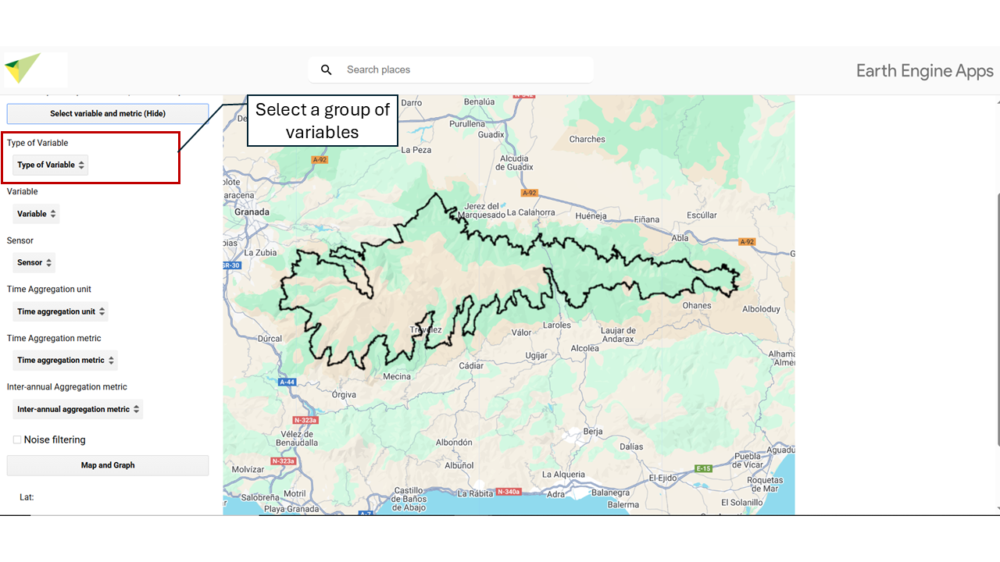

6 Type of Variable of Interest
Select the study variable. The variables are classified into major categories of EBVs {target=_blank} (Essential Biodiversity Variables), related to ecosystem functioning and structure. MonitorEO-OBSNEV includes:

6.1 🌱 Organic Carbon (Primary Production)
6.1.1 NDVI – Normalized Difference Vegetation Index
The Normalized Difference Vegetation Index (NDVI) is a widely used spectral indicator to quantify vegetation cover and condition through remote sensors. It is calculated from the difference between near-infrared (NIR) reflectance and red (RED) reflectance, normalized by their sum:
NDVI = (NIR − RED) / (NIR + RED)
This index ranges from −1 to 1. Values close to 1 indicate dense and vigorous vegetation, while values near −1 correspond to non-vegetated surfaces, such as water bodies, snow, or urban areas.
Units: unitless.
6.1.2 EVI – Enhanced Vegetation Index
The Enhanced Vegetation Index (EVI) is a spectral indicator developed to optimize the estimation of vegetation cover and condition from remote sensing data. Unlike traditional indices such as NDVI, EVI incorporates atmospheric correction factors and a compensation for soil background influence, improving sensitivity in areas with dense vegetation, low vegetation cover, or complex atmospheric conditions.
The general formula for EVI is as follows:
EVI = G · (NIR − RED) / (NIR + C1 · RED − C2 · BLUE + L)
where:
- NIR: near-infrared reflectance
- RED: red reflectance
- BLUE: blue reflectance
- G: gain factor (generally 2.5)
- L: soil correction factor (1.0)
- C1 and C2: atmospheric correction coefficients (6.0 and 7.5, respectively)
EVI values range from −1 to 1. Values close to 1 indicate dense and healthy vegetation, while negative or low values reflect non-vegetated areas, such as water bodies, urban areas, or snow-covered surfaces.
| EVI Value | Ecological interpretation |
|---|---|
| < 0.0 | Water, snow, clouds, non-vegetated areas |
| 0.0 – 0.1 | Bare soils, deserts, urban areas, rocks |
| 0.1 – 0.2 | Sparse vegetation, arid grasslands, open shrubland |
| 0.2 – 0.3 | Grasslands, rainfed agriculture, savannas |
| 0.3 – 0.5 | Open forests, active croplands (growing crops) |
| 0.5 – 0.7 | Dense temperate forests, croplands with high vegetation cover |
| > 0.7 | Tropical forests, jungles, very dense vegetation |
Units: unitless.
6.1.3 Chl-a – Chlorophyll-a Concentration
The chlorophyll-a index is used to estimate the concentration of chlorophyll-a in water bodies such as oceans, lakes, and rivers. Chlorophyll-a is the main photosynthetic pigment present in phytoplankton, so its concentration serves as an indirect indicator of algal biomass and primary productivity in aquatic ecosystems. It is a key indicator for assessing water quality and the health of aquatic ecosystems (Gitelson et al., 1993; IOCCG, 2000).
Units: mg m⁻³.
6.2 🌞 Radiation Balance
6.2.1 ALB – Albedo
Albedo is the fraction of incoming solar radiation reflected by a surface without being absorbed. It is a unitless parameter ranging from 0 (total absorption) to 1 (total reflection). A high albedo indicates that the surface reflects a large proportion of the incoming solar energy, as is the case with highly reflective surfaces such as snow or ice. In contrast, a low albedo implies greater radiation absorption, typical of dark surfaces such as urban areas, wet soils, or water bodies.
Albedo plays a key role in the Earth’s energy balance and processes related to global climate, as it directly influences the amount of energy entering and retained in the climate system.
Units: unitless.
6.3 💧 Water Balance
6.3.1 ET – Evapotranspiration
Estimate of the amount of water that evaporates from the Earth’s surface and is transpired by plants. Generated from the Mu et al. (2011) model, which implements an approach based on the Penman-Monteith equation, adapted for remote sensors. It helps to understand the water cycle, assess water availability in a region, and monitor water resources.
Units: Kj/m²/8days.
6.3.2 LE – Latent Heat
Indirect estimate of the energy consumed by evapotranspiration. During this process, energy is required to break or form bonds between molecules, resulting in the release or absorption of heat. Latent heat plays a fundamental role in the water cycle, as evaporation and condensation are key processes in cloud formation, precipitation, and climate regulation.
Units: J/m²/day.
6.3.3 LSWI – Land Surface Water Index
The LSWI is a spectral index used to detect and evaluate the presence of moisture on the land surface, particularly in vegetation and soil. It is based on the difference between near-infrared (NIR) and shortwave infrared (SWIR) reflectance, which are sensitive to water content in vegetation and soil.
LSWI = (NIR − SWIR) / (NIR + SWIR)
- NIR: Near-infrared band
- SWIR: Shortwave infrared band
High values → high surface moisture, wet soils, vegetation with high water content, wetlands, or irrigated croplands.
Low values → dry conditions, stressed vegetation, or arid soils.
Units: unitless.
6.3.4 NDWI – Normalized Difference Water Index
The NDWI is a spectral index designed to detect and quantify the presence of water on the Earth’s surface. It is based on the difference in reflectance between near-infrared (NIR) and green (GREEN), taking advantage of the strong absorption of water in NIR and its high reflectance in the visible range.
NDWI = (GREEN − NIR) / (GREEN + NIR)
- GREEN: Green band
- NIR: Near-infrared band
NDWI > 0 → presence of surface water (rivers, lakes, reservoirs, flooded areas)
NDWI < 0 → non-water terrestrial surfaces (vegetation, bare soil, urban areas)
Units: unitless.
6.3.5 NDSI – Normalized Difference Snow Index
The NDSI is a spectral indicator used to detect the presence and extent of snow on the Earth’s surface. It is based on the distinctive reflective properties of snow, which reflects strongly in the visible spectrum (green band) and absorbs significantly in shortwave infrared (SWIR), in contrast with most other land cover types.
NDSI = (GREEN − SWIR) / (GREEN + SWIR)
- GREEN: Green band
- SWIR: Shortwave infrared band
NDSI > 0.4 → high probability of snow or ice presence
NDSI < 0.2 → generally indicates absence of snow
These thresholds may vary depending on the resolution and sensor used.
Units: unitless.
6.4 🌡️ Sensible Heat
6.4.1 LST – Land Surface Temperature
Land Surface Temperature (LST) refers to the temperature recorded in the upper layer of the Earth’s surface or water bodies, as detected by remote sensors. LST is estimated from thermal radiance captured in the thermal infrared spectrum and is a key variable in analyzing processes such as energy balance, evapotranspiration, drought, water stress, and urban or agricultural monitoring.
Units: °C.
6.5 💨 Nutrients / Aerosols
6.5.1 ARSL – Aerosol Optical Depth
Amount of aerosols in the total atmospheric column. It is used to quantify how much aerosol load is present in the atmosphere. The total aerosol optical depth refers to all aerosol types, while some satellite products provide information on the optical depth of a specific aerosol type, such as dust optical depth, which quantifies the dust load in the atmospheric column.
Units: unitless.